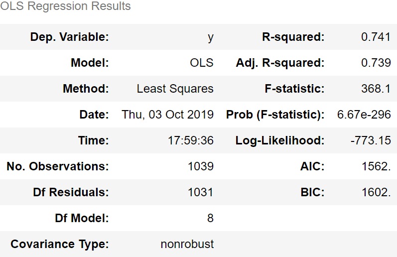
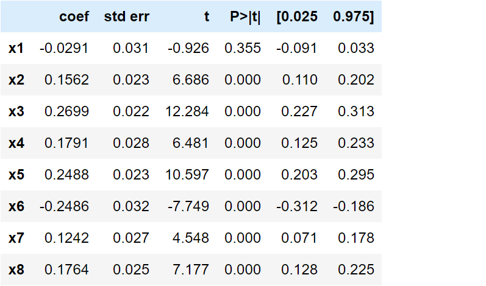
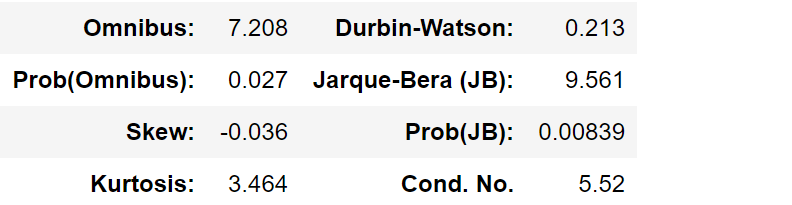

Sofia C.
Machine Learning Model Featured: Multiple Linear Regression Analysis
Project Python Libraries: Pandas | Scikit-learn & Statsmodels | Matplotlib
Hypothesis
I anticipated that factors that contribute to a social safety net would be a strong determinant of a country’s Life Ladder (or Happiness Index).
Model Details & Objectives
Multiple linear regression analysis lent itself perfectly to our goal. In this method, “Y” is the continuous response variable (or the “dependent” variable), while X1, X2, X3… are the predictor variables (or the “independent” variables). This type of regression is also known as Ordinary Least Squares regression (OLS) because produces a function that estimates the relationship between the independent variables, by minimizing the sum of the squares in the difference between the observed and predicted values of the dependent variable, configured as a straight line.
To minimize errors in the model, we focused on 8 variables in our data set:
- X1: GDP per capita
- X2: Social Support
- X3: Healthy Life Expectancy at Birth
- X4: Freedom to Make Life Choices
- X5: Generosity
- X6: Perceptions of Corruption
- X7: Confidence in National Government
- X8: Country's Average GINI Index
Data Cleaning
To feed the regression clean data, we:
- Created a new dataframe that picked out the rows in our dataset with the 8 variables of interest and determined our X (made up of multiple variables) and y dataframes
- Fixed the dataframe by finding all null values with isnull.sum() and then dropping all null values with df.dropna
- Standardized our data by scaling it down to avoid errors, using StandardScaler().fit
WIth this, we were ready to pass our newly scaled data, y_scaled and X_scaled, into our linear regression model with sm.OLS. This produced a statistical summary as shown in the Data Analysis.
Data Analysis
Statistical Summary
  The coefficient value signifies how much the mean of the dependent variable changes given a shift of one unit in the independent variable, while all of the other independent variables stay constant. A positive coefficient means that as the value of the independent variable increases, the mean of the dependent variable also increases. A negative coefficient indicates that as the independent variable increases, the dependent variable tends to decrease.
Our coefficient values rank as follows (from most positive to most negative impact on Life Ladder):
- X1: GDP per capita, .27
- X2: Social Support, .25
- X3: Healthy Life Expectancy at Birth, .179
- X4: Freedom to Make Life Choices, .176
- X5: Generosity, .16
- X6: Perceptions of Corruption, .12
- X7: Confidence in National Government, -.03
- X8: Country's Average GINI Index, -.25
The farther the negative coefficients get from 0, the more that variable brings down the Life Ladder with every one-unit increase. The further the positive coefficients get from 0, the more the variable raises the Life Ladder with every one-unit increase. Coefficients close to zero have minimal impact altogether. Therefore, the more people’s children are likely to survive, the happier they are. Conversely,perceptions of corruption bring down the mean Life Ladder. Interestingly, this dataset suggests GDP per capita has little to no bearing on Life Ladder.
R-squared is a figure between 0 and 100% that tells us how close the data is to the fitted regression line. In the case of our data set, it is closer to 1.00 at 0.741. This means that the model explains 74% of the variability of the response data around our mean. So the model fits our data fairly well, though not perfectly well either.
Conclusion
Multiple linear regression analysis proved to be a helpful way to quickly see the weight of a handful of variables on a single dependent variable. Applied to our data set, it suggests that healthy life expectancy at birth (0.2699), followed by generosity (0.2488), are the strongest determinant of a country’s happiness. Not surprisingly, the more perceptions of corruption (-0.2486), the more the Life Ladder was brought down. Interestingly, social support (0.1562) ranked 5th of the 8 independent variables and GDP per capita (-0.0291) had a negligible importance.
GitHub Code
Happiness Project: Multi Variant Linear Regression